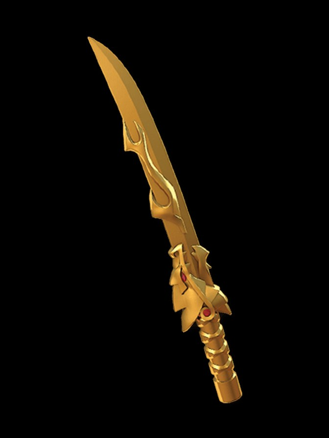

Sword of Fire
The Golden Weapon of Fire. It burns things up — armor, armies, battlefields — and it has a temper: pushed too far, it goes out of control, and the fire stops distinguishing. Kai learned to master it. The sword is still deciding about you.

Sword of Fire
Metaphysical Law: Fire does not hate. It hungers.
Properties & techniques
Exact player-facing procedures
Field notes. Subject: appetite, edged. Three truths govern it. First: the Sword of Fire is the only Golden Weapon with a documented loss of control — at the tournament, it went wild in Kai's hands, and the archive treats this not as malfunction but as disclosure. The sword's power scales with the wielder's passion, and passion is not a dial; Out of Control is what happens when the weapon agrees with you too much. Second: the fire cauterizes as it cuts, which makes the Sword the anti-regeneration weapon of the set — trolls, hydras, and undying things fear this blade the way sailors fear the deep, because what it kills stays killed. Third: the attunement demand is the most volatile of the four. Fire recognizes fire — a cold or hesitant wielder doesn't get refused the way Nya was refused; they get a sword that burns them back. The refusal here is not silence. It is feedback.
Relic profile
2d6 slashing + 2d6 fire · +4 to attack and damage rolls · Relic DC
Jujutsu origin
Forged by the First Spinjitzu Master from the gold of the Golden Peaks, one of four weapons that created Ninjago itself. The jujutsu reading: this is combustion as a standing wave. Normal fire consumes fuel and dies; the Sword's fire consumes the concept of fuel — it burns without needing anything to burn, which is why Immolate cannot be smothered, only endured or quenched by total immersion. Kai's mastery was learning to want exactly as much as the sword wanted. No more.
Immolate — On hit · 2 CE
Set the target ablaze. At the start of each of its turns, it takes 3d10 fire damage. The flames last 1 minute and cannot be smothered — ending them requires the target to spend its action dousing itself in water or taking cold damage. Creatures killed while immolated are reduced to ash.
Heat Wave — Action · 4 CE
A 30-ft cone of white heat. Each creature makes a DEX save vs your Relic DC: 6d10 fire damage on a failure, half on a success. Ice, snow, and magical frost in the area are destroyed; flammable objects ignite.
Warmaster's Edge
Wounds from the Sword cauterize instantly. Creatures damaged by it cannot regenerate HP or reform until the end of your next turn, and bleeding effects end immediately. Undead and constructs take full fire damage from the Sword regardless of resistance (immunity still applies).
Out of Control — Free · once per dawn
Let the sword off its leash, as it slipped Kai's at the tournament. Until the end of your turn, all fire damage you deal with the Sword is doubled — but at the end of your turn, you take fire damage equal to half the total fire damage you dealt this turn (no save; resistance applies). The sword does not distinguish. That is the point.
Binding Vow — The Fire Chooses
The Sword grants its full power only to a wielder fire recognizes — the GM judges affinity (fire techniques, a passionate or wrathful nature). All others are refused, and refusal here burns: Immolate and Out of Control are unavailable, and whenever you roll a natural 1 on an attack with the Sword, you take 2d10 fire damage as the blade bites back. The fire answers passion with passion.
Cursed-tool attunement
Campaign canon